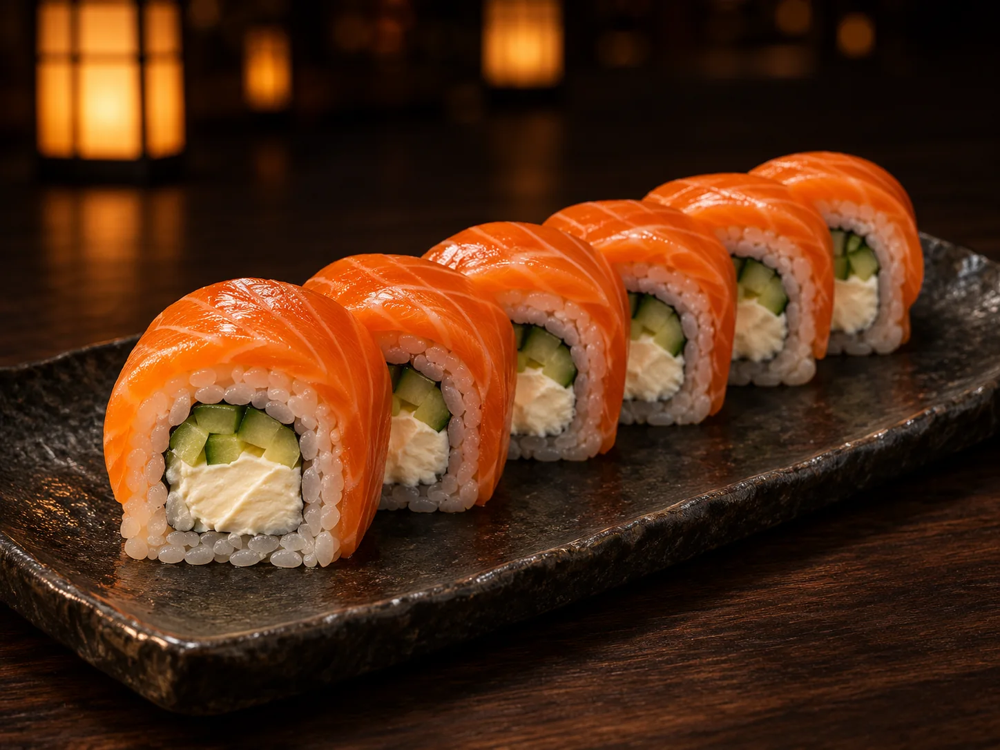
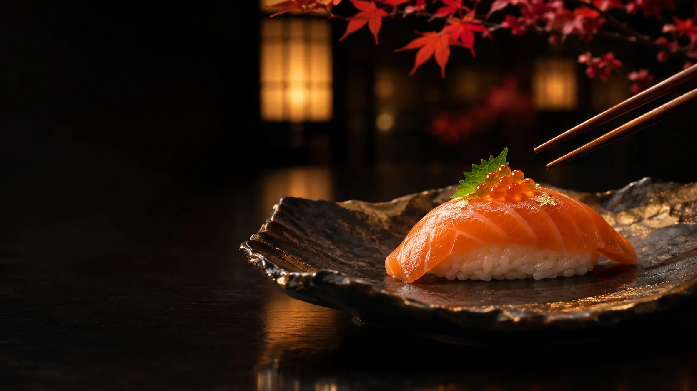
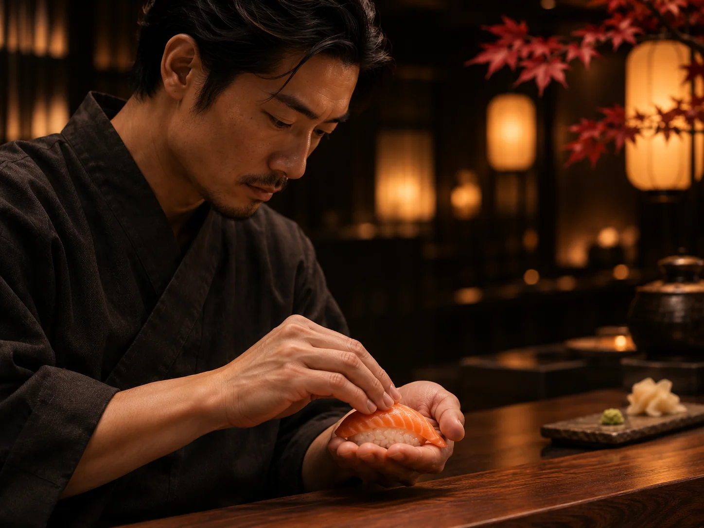
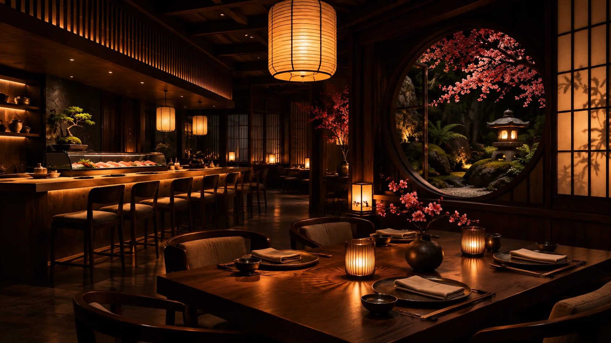

АСТАНА · ЯПОНСКАЯ КУХНЯ · С 2022 ГОДА
Вкус, которому
нужно время
Авторский японский стол, сезонные продукты и ритуал гостеприимства omotenashi — в самом сердце квартала Ханами.
旬 сезонность · точность · omotenashi
Листайте к истории вкусаСезонностьритм природы в меню
Гармониябаланс вкуса и формы
Мастерствоточность каждого жеста
Заботаяпонское omotenashi

手仕事 · ремеслоФилософия Tokyo Premium
Уважение к продукту.
Свобода для вкуса.
Сезон задаёт направление, мастерство сохраняет чистоту вкуса, а пауза помогает заметить детали. Так устроена наша учебная история о японском столе.
季節 · 技 · 心
Открыть философию Рэн Такахаси · вымышленный шеф-повар концепции
Пространство · тёплая тишина
Вечер начинается
ещё до первой подачи
Тёмный орех, мягкий свет бумажных фонарей и камерная суши-стойка создают спокойный ритм для долгого ужина.
Исследовать пространствоOmakase · доверьтесь выбору шефа
История вкуса
в нескольких подачах
Сезонный дегустационный маршрут — от лёгкого первого акцента до спокойного финала.
Узнать об OmakaseИстории гостей · демонстрационные примеры
«В нигири слышно главное: свежесть рыбы, тёплый рис и точность прикосновения»
Учебный отзыв · вымышленный персонаж
Читать и оставить отзывОставьте место для вечера
Ваш стол.
Ваш темп.
В PHP-версии форма создаёт запрос на бронирование. На GitHub Pages данные останутся только в этом браузере.